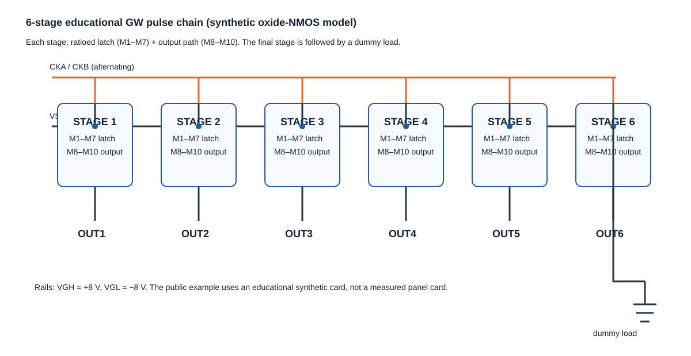
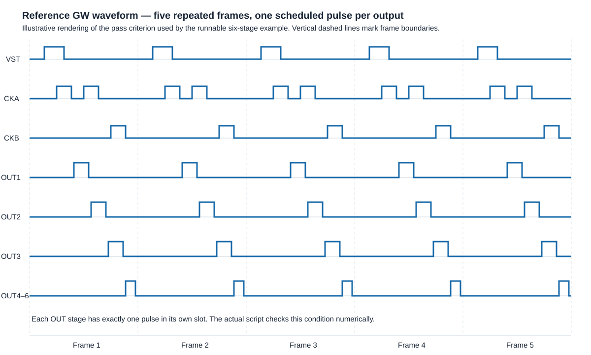

6단 GW 회로
시뮬레이션 검증 보고서
합성 oxide-NMOS TFT 모델을 OpenVAF OSDI로 컴파일하고, ngspice 과도해석으로 OUT1~OUT6의 순차 게이트 펄스를 자동 판정했다.
결론
OUT1~OUT6 모두 1펄스
OUT1~OUT6 모두 1펄스
OUT2~OUT6 슬롯 판정 실패
중요: 이 예제는 논문의 blocking-structure 회로를 재현한 것이 아니다. 공개 특허의 래치+출력 경로에서 출발한 교육용 ratioed-NMOS 체인이다. 따라서 논문의 전력 42.3% 절감이나 -1.6~+0.8 V 안정 동작을 이 결과로 주장하지 않는다.
처음 시작: PMOS·NMOS TFT 카드 검사
models/tft.va는 공통 3단자 Verilog-A TFT 모델이다. models/tft_cards.json에는 PMOS형 LTPS 카드와 NMOS형 oxide TFT 카드가 들어 있다. 먼저 두 카드의 전달 특성을 자동 검사한다.
bash scripts/run_tft_iv.sh # PASS: bundled PMOS and NMOS TFT cards passed the first I–V check
이후 bash scripts/run_gw_example.sh 0.0를 실행하면 같은 NMOS 카드로 6단 GW 체인을 돌린다. 카드 값은 교육용 합성 값이며 실제 제품 측정 카드가 아니다.
회로 구조
각 스테이지는 ratioed NMOS 래치(M1~M7)와 출력 경로(M8~M10)로 구성했다. VST로 시작한 캐리 신호가 6단을 지나며 CKA/CKB에 맞춰 OUT1부터 OUT6까지 순차 펄스를 만든다.

파형과 판정 기준
프레임마다 OUT1→OUT6이 각자 할당된 시간 슬롯에서 정확히 한 번씩 펄스가 나와야 PASS다. 중복 펄스, 누락 펄스 또는 다른 슬롯의 펄스는 FAIL이다.

bash scripts/run_gw_example.sh 0.0 # PASS: six one-hot GW pulses reproduced with the synthetic NMOS model
문턱전압 스윕: 실제 실행 결과
| dVth | OUT1 | OUT2 | OUT3 | OUT4 | OUT5 | OUT6 | 전체 |
|---|---|---|---|---|---|---|---|
| -1.6 V | PASS | FAIL | FAIL | FAIL | FAIL | FAIL | FAIL |
| 0.0 V | PASS | PASS | PASS | PASS | PASS | PASS | PASS |
| +0.8 V | PASS | PASS | PASS | PASS | PASS | PASS | PASS |
dVth는 기준 합성 NMOS 카드의 VTH = +0.595 V에 더한 값이다. 다른 TFT 모델, 토폴로지, 부하, 클록에서는 결과가 달라질 수 있다.
논문과 이 예제의 관계
대상 논문은 Im 외, “Oxide TFT-Based Scan Driver Circuit With Blocking Structure for Multisignal Output,” Journal of the Society for Information Display, 2026, DOI 10.1002/jsid.70114다.
- 공개 초록: blocking structure로 제어 노드를 분리해 클록 간섭을 줄이는 다중 출력 scan driver를 제안한다.
- 논문은 42.3% 전력 감소와 -1.6~+0.8 V 문턱전압 범위를 보고한다.
- 원문은 Wiley 유료 Version of Record라 PDF를 이 저장소에 복제하지 않았다. DOI에서 합법적으로 열람해야 한다.
- 이 저장소는 순차 GW 펄스의 실행 가능한 교육용 예제를 제공하며, 논문 회로의 독립 재현 결과는 아니다.